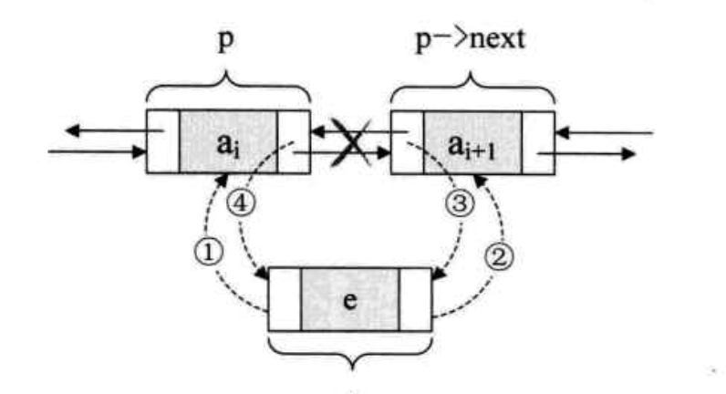
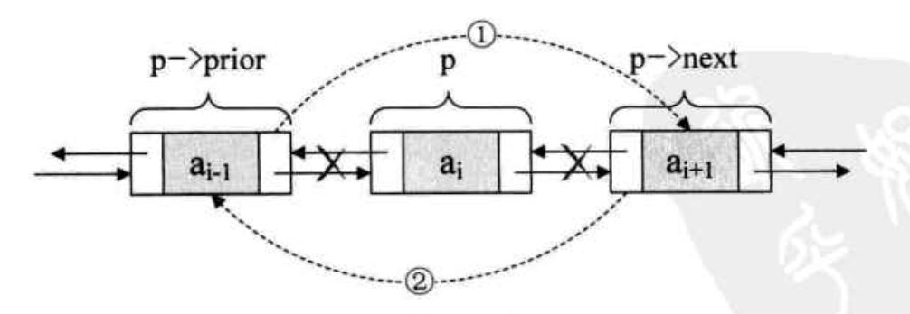
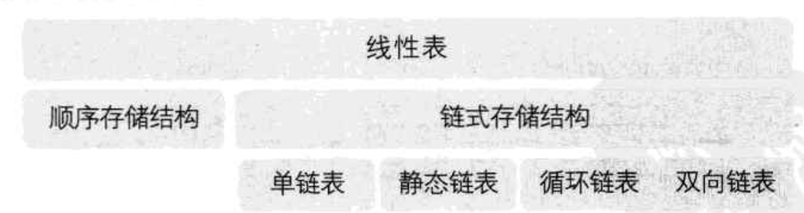

update at 2017-04-12
逻辑结构：指数据对象中数据元素之间的相互关系
1. 集合结构
2. 线性结构
3. 树形结构
4. 图形结构
物理结构：指数据的逻辑结构在计算机中的存储形式
1. 顺序存储结构
2. 链式存储结构
逻辑结构是面相问题的，物理结构是面相计算机的，基本目标就是将数据及其逻辑关系存储到计算机的内存中。
update at 2017-04-13
算法具有五个基本特性：输入、输出、有穷性、确定性和可行性
好的算法应该具有正确性、可读性、健壮性、高效率和低存储量的特征
判断一个算法的效率时，函数中的常数和其他次要项常常可以忽略，而更应该关注主项（最高阶项）的阶数
update at 2017-04-17
推到大 O 阶：
- 用常数 1 取代运行时间中的所有加法常数。
- 在修改后的运行次数函数中，只保留最高阶项。
- 如果最高阶项存在且不是 1，则去除与这个项相乘的常数。
得到的结果就是大 O 阶。
update at 2017-04-18
线性表顺序存储结构需要三个属性：
- 存储空间的起始位置
- 线性表的最大存储容量
- 线性表的当前长度
线性表顺序存储结构的优缺点：
优点：
- 无需为表示表中元素之间的逻辑关系而增加额外的存储空间
- 可以快速地存取表中任一位置的元素
缺点：
- 插入和删除操作需要移动大量元素
- 当线性表长度变化较大时，难以确定存储空间的容量
- 造成存储空间的碎片
update at 2017-04-19
链式结构
为了表示每个数据元素 ai 与其直接后继数据元素 ai+1 之间的逻辑关系，对数据元素 ai 来说，除了存储其本身的信息之外，还需存储一个指示其直接后继的信息（即直接后继的存储位置）
把存储数据元素信息的域称为数据域，把存储直接后继位置的域成为指针域。指针域中存储的信息称做指针或链。这两部分信息组成数据元素 ai 的存储映像，称为结点（Node）
链表中第一个节点的存储位置叫做头指针
头指针
- 头指针是指链表指向第一个节点的指针，若链表有头结点，则是指向投结点的指针
- 头指针具有标识作用，所以常用头指针冠以链表的名字
- 无论链表是否为空，头指针均不为空。头指针是链表的必要元素
头结点
- 头结点是为了操作的统一和方便而设立的，放在第一元素的结点之前，其数据域一般无意义（也可以存放链表的长度）
- 有了头结点，对在第一元素结点前插入结点和删除第一节点，其操作与其他节点的操作就统一了
- 头结点不一定是链表必须要素
update at 2017-04-20
3.11 顺序结构与单链表结构优缺点
存储分配方式
- 顺序存储结构用一段连续的存储单元依次存储线性表的数据元素
- 单链表采用链式存储结构，用一组任意的存储单元存放线性表的元素
时间性能
查找
- 顺序存储结构O(1)
- 单链表O(n)
插入和删除
- 顺序存储结构需要平均移动表长一半的元素，时间为O(n)
- 单链表在找出某位置的指针后，插入和删除时间为O(1)
空间性能
- 顺序存储结构需预分配存储空间，分大了浪费，分小了容易发生上溢
- 单链表不需要分配存储空间，只要有就可以分配，元素个数也不受限制
结论
- 若线性表需要频繁查找，很少进行插入和删除操作时，宜采用顺序存储结构。若需要频繁插入和删除时，宜采用单链表结构
- 当线性表中的元素个数变化较大或者根本不知道有多大时，最好用单链表结构，这样可以不需要考虑存储空间的大小问题。而如果事先知道线性表的大致长度，用顺序存储结构效率会高很多
3.14 双向链表
线性表的双向链表存储结构
|
|
双向链表插入元素

|
|
双向链表删除元素

|
|
3.15 回顾总结
线性表的两种结构

4.2 栈的定义
栈（stack）是限定仅在表尾进行插入和删除操作的线性表。
把允许插入和删除的一端称为栈顶（top），另一端称为栈底（bottom）
不含任何数据元素的栈称为空栈，栈又称为后进先出（Last In First Out）的线性表，简称 FIFO 结构。
栈的插入操作叫作进栈，也称压栈、入栈。
栈的删除操作叫做出栈。
4.9 栈的应用 – 四则运算表达式求值
中缀表达式转后缀表达式:
如：9+(3-1)3+10/2 -> 9 3 1 - 3 + 10 2 / +
规则：从左到右遍历中缀表达式的每个数字和符号，若是数字就输出，即成为后缀表达式的一部分；若是符号，则判断其与栈顶符号的优先级，是有括号或优先级低于栈顶符号（乘除优先加减）则栈顶元素依次出栈并输出，并将当前符号进栈，一直到最终输出后缀表达式为止。